Marinas
Organised berths, shore power, water, showers, paperwork and the strange luxury of stepping ashore without a dinghy. Less romantic than anchoring — sometimes exactly what the crew needs.
Betina (Murter)

Marina Betina is a compact and practical marina on Murter, useful as a well-equipped overnight stop with proper harbour infrastructure and shipyard character. It offers good facilities, but the layout feels very tight, so berthing is more about concentration than relaxed elegance.
- Shelter: good marina shelter inside the harbour basin
- Berthing: stern-to with mooring lines; berths for yachts up to around 20 m
- Manoeuvring: very tight, with limited room between berths and fairways
- Facilities: water, electricity, sanitary facilities, laundry, restaurant and extensive shipyard services
- Atmosphere: practical working-marina feel rather than a purely relaxed holiday harbour
- Watch out for / Nice to know: the restaurant in the marina is convenient, but rather average; careful manoeuvring is required, especially in crosswinds or when the marina is busy

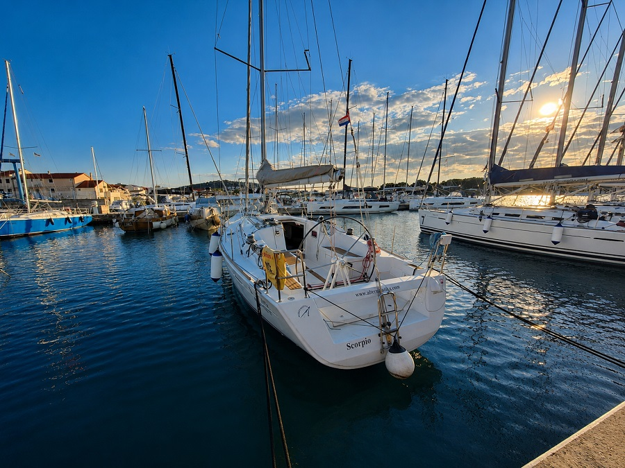
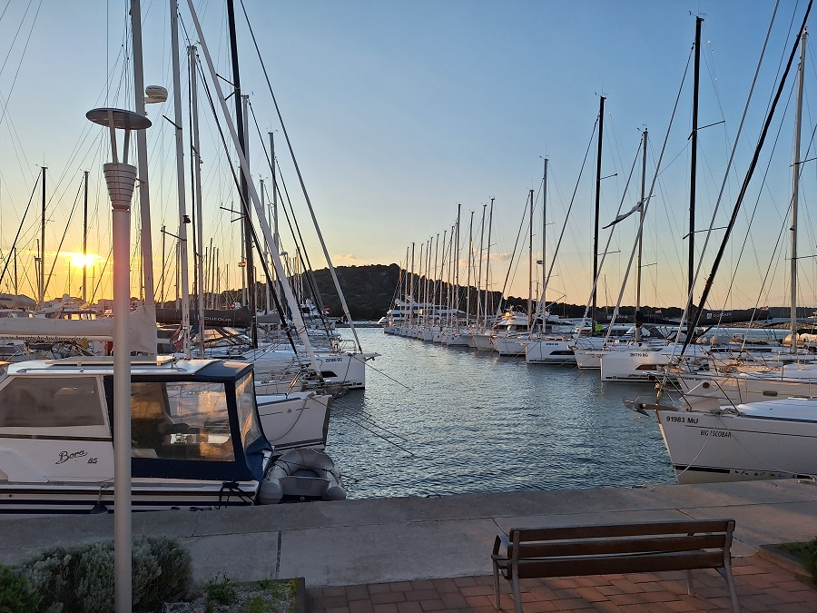
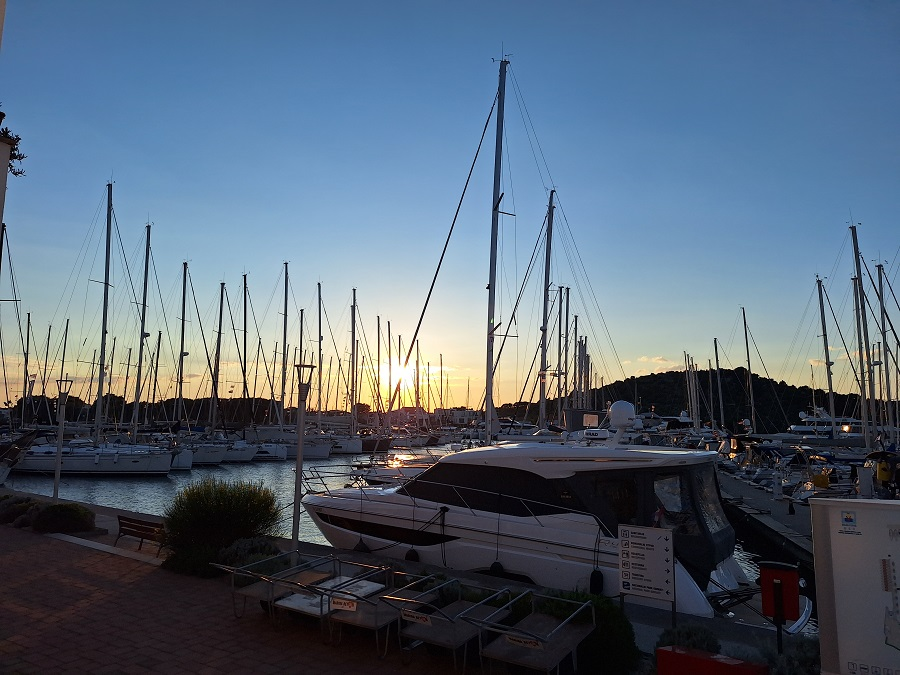
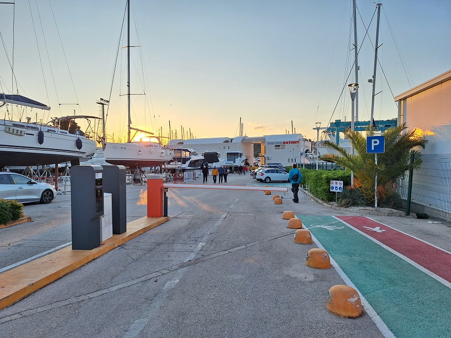
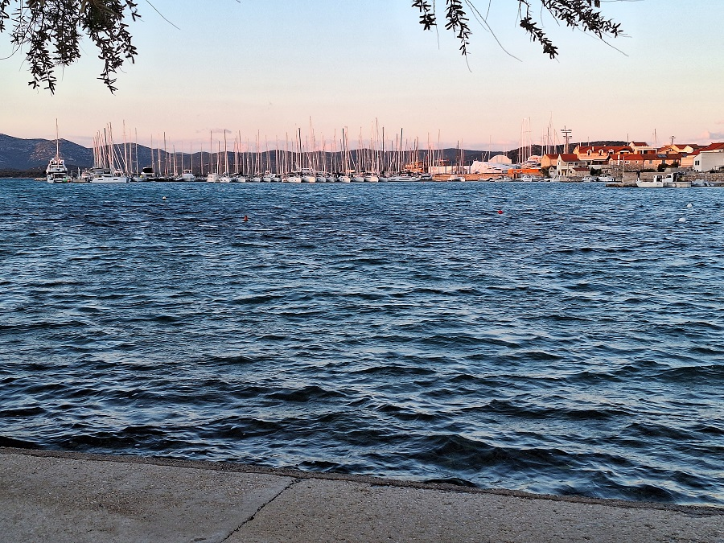
Biograd

Marina Kornati and the neighbouring Marina Šangulin form one of the major marina areas in Biograd na Moru. It is large, busy and very well equipped, with plenty of nautical infrastructure, restaurants and services around the harbour. For cruising, the location is excellent: from here, routes open naturally toward the Kornati islands, Pašman, Ugljan, Murter and the wider central Dalmatian island world.
- Shelter: good marina shelter in a large and well-established harbour area
- Berthing: stern-to with mooring lines; Marina Kornati accepts yachts up to around 23 m
- Manoeuvring: very tight fairways despite the size of the marina; careful manoeuvring is needed, especially when traffic is heavy
- Facilities: extensive infrastructure, including water, electricity, sanitary facilities, technical service, crane / travel lift, restaurants and nearby town services
- Atmosphere: large, busy and practical; more of a major nautical base than a quiet harbour stop
- Watch out for / Nice to know: heavy marina traffic, narrow fairways, shallow-running mooring lines in parts of the eastern marina and a not always ideal parking situation; very useful as a starting point in almost every direction
Impressions


Cres

ACI Marina Cres is a large and well-equipped marina just outside the old town of Cres. For us, it worked exactly as such a marina should: when Bora was threatening, it became a safe and well-protected refuge. The town itself is charming and worth the walk, although summer nights can occasionally become much louder than expected.
- Shelter: very good marina shelter; a reliable refuge in threatening Bora conditions
- Berthing: stern-to with mooring lines; berths for yachts up to around 22 m
- Manoeuvring: moderate space for a large marina; pay attention to traffic inside the harbour basin
- Facilities: water, electricity, sanitary facilities, laundry, restaurant, shop, fuel station, technical service, crane and travel lift
- Atmosphere: large, practical and well-organised marina close to the old town of Cres; pleasant town ashore, but not always quiet at night in summer
- Watch out for / Nice to know: 5 kn speed limit throughout the harbour bay; occasional loud music can continue far into the night during the summer season
Impressions


Jezera (Murter)

ACI Marina Jezera is a pleasant and spacious marina in a small holiday village on Murter. Compared with many other Croatian marinas, the berthing area feels generous and manoeuvring is fairly relaxed. The marina is well protected and useful as an overnight stop, although the main village infrastructure and restaurants require a longer walk than one might expect from the chart.
- Shelter: good marina shelter inside Jezera Bay, protected by the marina breakwater
- Berthing: stern-to with mooring lines; reservation can be useful because the marina is often busy
- Manoeuvring: plenty of room by Croatian marina standards; fairways and berths feel comparatively generous
- Facilities: water, electricity, sanitary facilities, restaurant, technical service, crane, fuel station and parking
- Atmosphere: quiet holiday-resort feel with a nautical base character; pleasant village, but not as immediately connected to the infrastructure as it first appears
- Watch out for / Nice to know: check depth carefully at the fuel station; expect charter traffic and possible fuel queues on busy changeover days; the walk to shops and restaurants can feel rather long
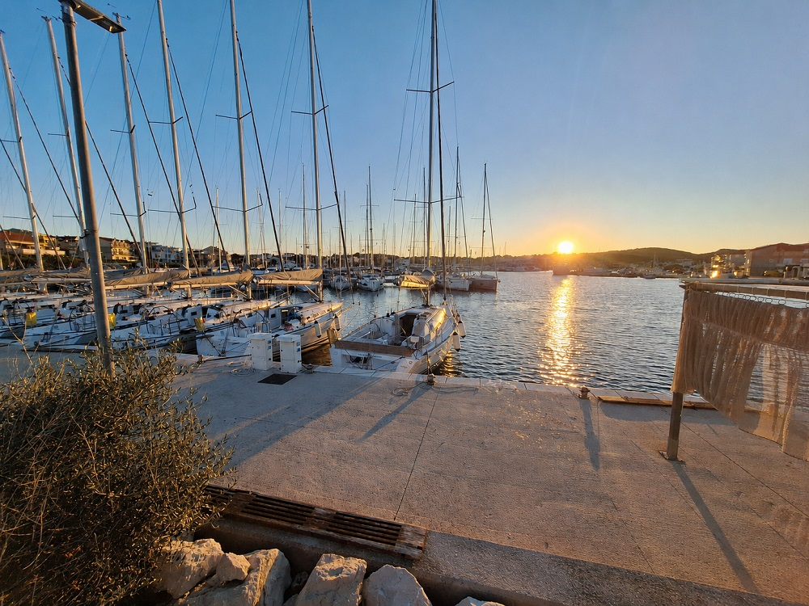
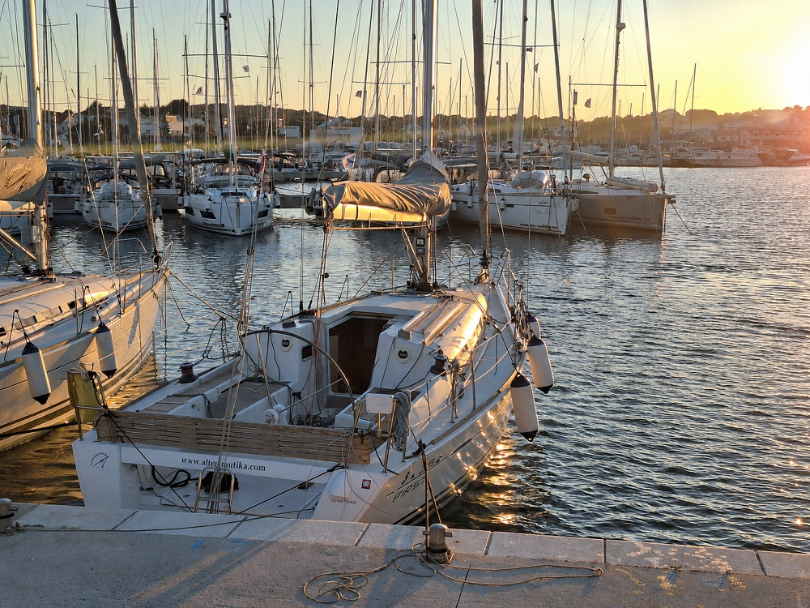
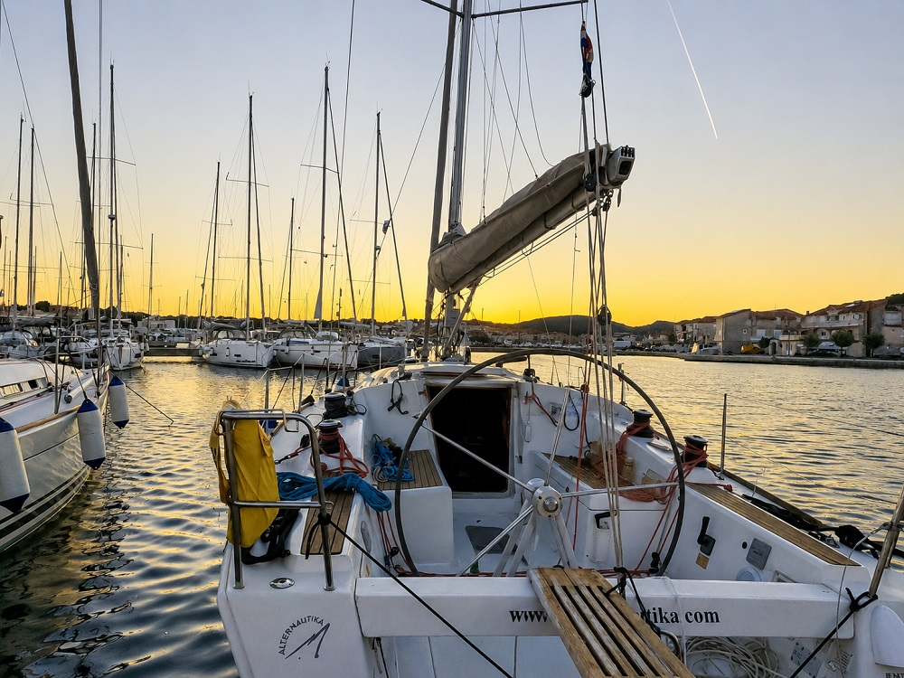
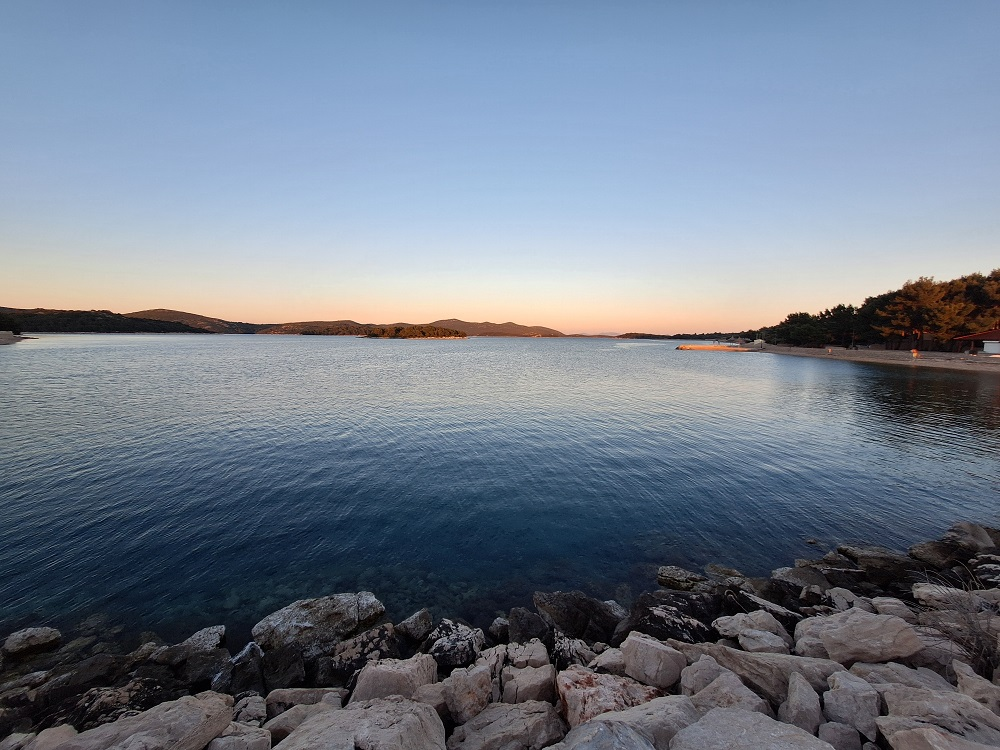
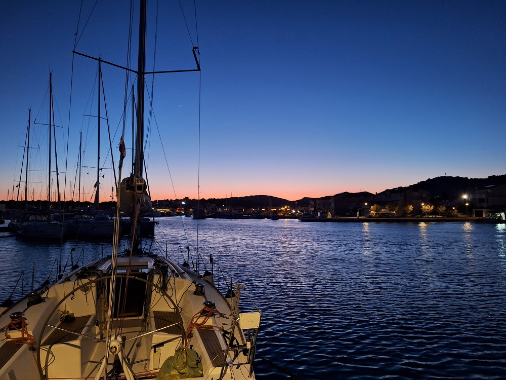
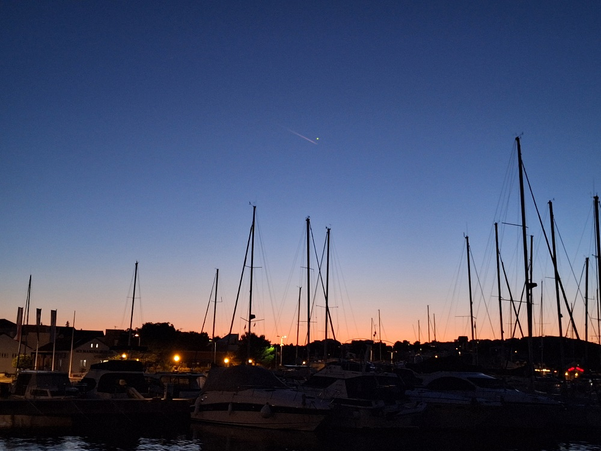
Kaštel Gomilica (Split)

Marina Kaštela is a large, modern and very spacious marina in Kaštela Bay, well placed between Split, Trogir and the airport. It feels more like a full nautical base than a small harbour stop: long walking distances, plenty of infrastructure and a generous layout, but also enough room to manoeuvre without the nervous close-quarters feeling of many older Croatian marinas.
- Shelter: good marina shelter inside Kaštela Bay and behind the large breakwater
- Berthing: stern-to with mooring lines; also suitable for very large yachts on the outer / mega-yacht side
- Manoeuvring: generous space by Croatian marina standards, with wide fairways and enough room for controlled manoeuvres
- Facilities: water, electricity, sanitary facilities, laundry, restaurants, café, supermarket, technical service, crane, travel lift, parking and extensive charter-base infrastructure
- Atmosphere: large, practical and professional; not especially intimate, but very convenient as a starting or ending point for a cruise
- Watch out for / Nice to know: long walks across the marina; fuel arrangements can be special since the pontoon fuel station was removed, so check the current setup in advance; parking can be surprisingly unforgiving, even for very short stops or taxis
Impressions


Lignano

Marina Punta Faro in Lignano is a large and well-equipped North Adriatic marina, but the berth itself can feel rather tight. It is a practical stop with plenty of infrastructure and services, yet the approach and berthing style require attention: shallow water, a channel marked by piles and berthing between wooden posts give it a very different character from the typical Croatian mooring-line marina.
- Shelter: good shelter inside the marina, but the approach can become demanding in strong southerly winds
- Berthing: berth between wooden piles / dolphins rather than classic stern-to mooring lines
- Manoeuvring: rather tight; careful boat handling is needed between the piles and neighbouring berths
- Facilities: extensive marina infrastructure, including water, electricity, fuel, sanitary facilities, restaurants, technical service, travel lift, workshops and nautical services
- Atmosphere: large, organised and service-oriented; more practical marina base than quiet harbour hideaway
- Watch out for / Nice to know: the entrance runs through a pile-marked channel with limited depth; keep carefully to the fairway. In Jugo conditions, a steep and unpleasant sea can build up quickly outside the entrance.
Mali Lošinj

Marina Lošinj sits at the northern side of the large Mali Lošinj harbour bay, close to the Privlaka passage. It is a useful and rather practical stop, especially outside the main season, but not the kind of marina that feels spacious or luxurious. In our experience, the berths and fairways were very tight, and in Bora conditions the shelter felt only moderate rather than completely reassuring.
- Shelter: generally sheltered inside the harbour bay, but only moderately protected in Bora from our experience
- Berthing: stern-to with mooring lines
- Manoeuvring: very tight; careful manoeuvring is required, especially when the marina is busy or with wind inside the basin
- Facilities: water, electricity, sanitary facilities, Wi-Fi and technical services, but the infrastructure felt rather basic in the off-season
- Atmosphere: practical and quiet outside the main season; more of a functional harbour stop than a polished marina experience
- Watch out for / Nice to know: check the current status and opening times of the Privlaka bridge before planning the approach through the canal; if the bridge cannot open, the route has to be planned accordingly
Impressions


Palmižana (Sv Klement)

ACI Marina Palmižana on Sv. Klement has a spectacular location in the Pakleni Islands, just across from Hvar — but as an overnight stop it can feel far less idyllic than the scenery suggests. In high summer, the marina was completely overcrowded, extremely tight and noisy. For us, it worked only as an emergency overnight berth; under normal circumstances, it would not be a place I would deliberately choose again.
- Shelter: generally sheltered inside the bay, but the experience depends strongly on season, wind direction and berth position
- Berthing: stern-to with mooring lines in a very busy seasonal ACI marina
- Manoeuvring: extremely tight — one of the narrowest marina fairways I have experienced; careful manoeuvring is essential
- Facilities: water, electricity, sanitary facilities, restaurants and basic marina services; no fuel directly in the marina
- Atmosphere: beautiful island setting, but in summer heavily crowded, loud and party-oriented rather than calm or restful
- Watch out for / Nice to know: avoid arriving late in peak season if possible; expect little room, loud party music and heavy tender / taxi-boat traffic. Also pay attention to the rock Baba near the approach and check the current entrance information before arrival.
Piškera (Kornat)

ACI Marina Piškera is one of those places that feels remote, beautiful and slightly improvised at the same time. Set deep inside the Kornati islands, it offers a useful overnight berth in a spectacular landscape, but it is not a marina where everything feels solid and effortless. In stronger weather, especially Jugo, the berth can become noticeably uncomfortable.
- Shelter: generally useful shelter inside the Kornati archipelago, but stromy Jugo can create swell; Bora may hit some berths side-on
- Berthing: stern-to with mooring lines; in strong Jugo our moorings kept giving way gradually through the night, probably due to a ground-chain setup rather than heavy individual blocks
- Manoeuvring: moderately tight; manageable, but not spacious, and extra attention is needed near the entrance and fairway
- Facilities: seasonal marina with restaurant, small grocery store and sanitary facilities; water and electricity are only available during limited time windows
- Atmosphere: remote Kornati outpost rather than a polished marina; beautiful, barren and memorable, but also expensive and basic in parts
- Watch out for / Nice to know: a rock / reef lies uncomfortably close to the navigable area near the approach, so follow the recommended entrance carefully. In Bora, rigs can get very close or even interfere if boats are pressed sideways; in Jugo, expect swell and do not blindly trust the moorings. The Kornati National Park ticket was included in the berth fee.
Impressions


Portorož

Marina Portorož is a large and well-equipped marina on the Slovenian coast. I only entered the marina for approach and harbour manoeuvre practice, so this is not a full overnight impression. From that short visit, it felt like a practical and organised full-service marina rather than a small atmospheric harbour stop.
- Shelter: large sheltered marina basin on the Slovenian coast
- Berthing: wet and dry berths; mooring lines and alongside berthing are listed for the marina
- Manoeuvring: suitable for harbour manoeuvre practice, with a large marina layout and controlled fairways
- Facilities: water, electricity, sanitary facilities, fuel, laundry, technical services, dry berths and winter storage halls
- Atmosphere: large, organised and service-oriented; more of a full marina base than a small-town harbour experience
- Watch out for / Nice to know: impression based only on entering and manoeuvring inside the marina, not on an overnight stay
Punat (Krk)

placeholder
- Shelter: placeholder
- Berthing: marina berth
- Depth impression: marina depths
- Nice to know:
- Watch out for:
Impressions


Rab

placeholder
- Shelter: placeholder
- Berthing: marina berth
- Depth impression: marina depths
- Nice to know:
- Watch out for:
Impressions


Šibenik

placeholder
- Shelter: placeholder
- Berthing: marina berth
- Depth impression: marina depths
- Nice to know:
- Watch out for:
Impressions


Šimuni (Pag)

placeholder
- Shelter: placeholder
- Berthing: marina berth
- Depth impression: marina depths
- Nice to know:
- Watch out for:
Impressions


Skradin

placeholder
- Shelter: placeholder
- Berthing: marina berth
- Depth impression: river marina depths
- Nice to know:
- Watch out for:
Impressions


Impressions (Krka Waterfalls)


Sukošan

placeholder
- Shelter: placeholder
- Berthing: marina berth
- Depth impression: marina depths
- Nice to know:
- Watch out for:
Impressions


Supetarska Draga (Rab)

placeholder
- Shelter: placeholder
- Berthing: marina berth
- Depth impression: marina depths
- Nice to know:
- Watch out for:
Impressions


 <
<Venice (Isola Sant'Elena)

placeholder
- Shelter: placeholder
- Berthing: marina berth
- Depth impression: lagoon / marina depths
- Nice to know:
- Watch out for:
Impressions


Veruda (Pula)

placeholder
- Shelter: placeholder
- Berthing: marina berth
- Depth impression: marina depths
- Nice to know:
- Watch out for:
Impressions


Zaton (Šibenik)

placeholder
- Shelter: placeholder
- Berthing: marina berth / harbour berth
- Depth impression: harbour depths
- Nice to know:
- Watch out for:
Impressions